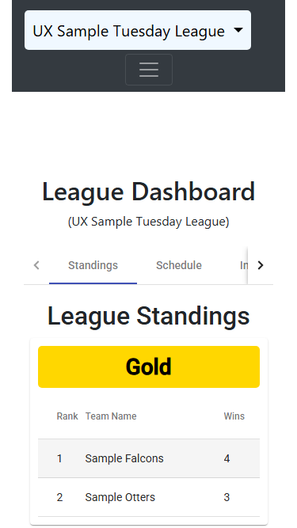
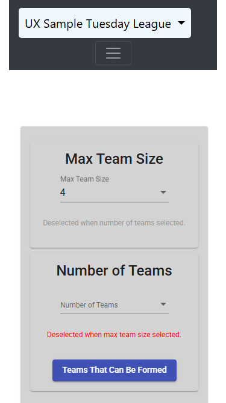
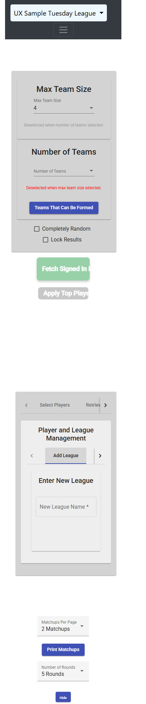
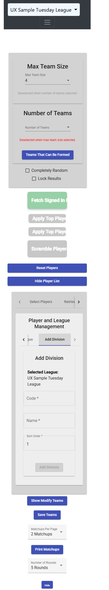
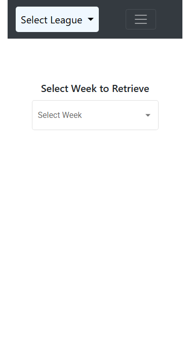
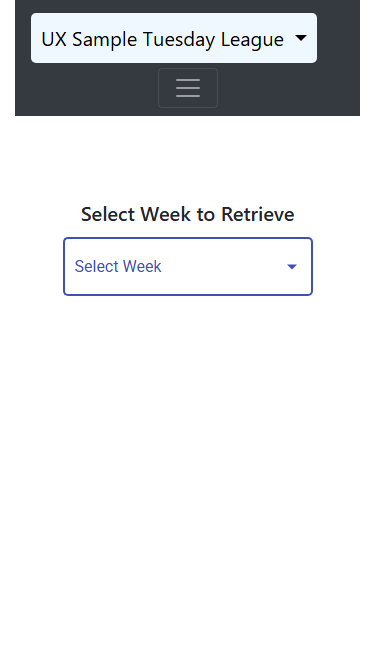
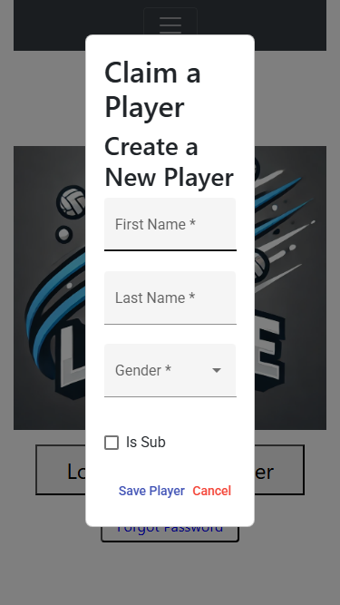
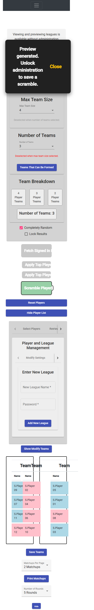
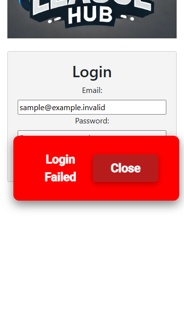

League Hub UX audit — current screens
Selected 22 of 114 captures. Local role layouts use synthetic fixtures; not real authentication. See full screenshot index for provenance and sizes.
 home · visitor
home · visitor
1366×768
UX-01 standings-populated · player
standings-populated · player
375×667
UX-06
dashboard-populated · player
375×667
 navigation-player · player
navigation-player · player
375×667
UX-05, UX-13
scrambler-populated · manager
375×667
UX-04
add league · manager
375×667
UX-08
add division · manager
375×667
UX-08 scoring-populated · manager
scoring-populated · manager
375×667
UX-03, UX-10 league teams · manager
league teams · manager
375×667
UX-08 team management · manager
team management · manager
375×667
UX-16 sign-in-populated · player
sign-in-populated · player
375×667

kq-populated · player
375×667

kq-week-selector · player
375×667
 claim-picker · new-player
claim-picker · new-player
375×667
UX-02, UX-07
player-create · new-player
375×667
UX-02, UX-15, UX-16 login-validation · visitor
login-validation · visitor
375×667
UX-09 registration-validation · visitor
registration-validation · visitor
375×667
UX-09, UX-15 kq-results-filled · player
kq-results-filled · player
375×667
UX-14
scramble-preview · visitor
375×667
UX-04 league-settings-accesspoint · manager
league-settings-accesspoint · manager
375×667
UX-08
login-error · visitor
375×667
UX-11, UX-09 scoring-populated · manager
scoring-populated · manager
1366×768
UX-03, UX-13, UX-18